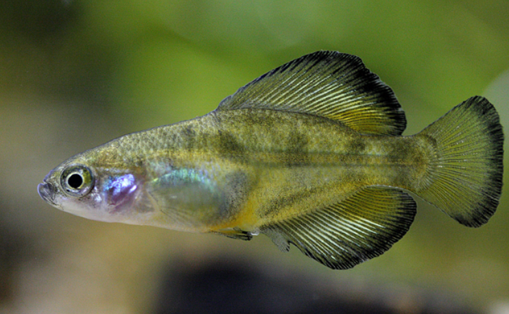

Systématique
- Ordre : Cyprinodontiformes
- Famille : Goodeidae
- Genre : Girardinichthys
- Espèce : G. multiradiatus
- Auteur : (Meek, 1904)

Girardinichthys multiradiatus est un poisson vivipare remarquable, endémique du plateau central du Mexique. Il se distingue immédiatement par le nombre élevé de rayons dans ses nageoires dorsale et anale, particulièrement développées chez les mâles adultes, ce qui lui confère une silhouette unique parmi les Goodeidae.
Les mâles atteignent une taille de 4 à 5 cm, tandis que les femelles peuvent être légèrement plus grandes, approchant les 6 cm. La coloration de base est brun-olive avec des reflets dorés ou bronzés. Le caractère le plus frappant est la nageoire dorsale du mâle, très haute et longue, souvent bordée d'un liseré noir ou sombre. Les nageoires peuvent prendre une teinte jaunâtre à orangée lors des parades nuptiales.
L'espèce est actuellement classée comme "Vulnérable" par l'UICN. Ses habitats, situés à haute altitude, sont menacés par l'urbanisation croissante de la région de Mexico et de Toluca, ainsi que par la pollution industrielle et domestique des cours d'eau.
Girardinichthys multiradiatus est un poisson benthopélagique qui apprécie les eaux fraîches et bien oxygénées. C'est une espèce active mais pacifique, bien que les mâles puissent se montrer très compétitifs entre eux. Ils passent une grande partie de la journée à parader, toutes nageoires déployées, pour impressionner les femelles ou intimider les rivaux.
En raison de son origine géographique (haute altitude), ce poisson possède un métabolisme adapté à des températures plus basses que la moyenne des poissons tropicaux. Il est sensible aux fortes chaleurs et nécessite une eau de très bonne qualité. Il apprécie les décors riches en cachettes et en végétation.
Mode : Vivipare matrotrophe.
La reproduction suit le cycle classique des Goodeinae : fécondation interne via l'andropodium du mâle et développement intra-ovarien des embryons avec nutrition par trophotaeniae. La gestation dure généralement entre 50 et 60 jours.
Les portées sont modérées, variant de 10 à 30 alevins selon la taille de la femelle. Les jeunes naissent à une taille impressionnante (souvent plus de 10 mm) et sont capables de se nourrir immédiatement de micro-crustacés. Contrairement à d'autres espèces, les adultes sont relativement tolérants envers leur progéniture si l'espace est suffisant.
Dimorphisme sexuel : Très prononcé. Le mâle possède des nageoires dorsale et anale beaucoup plus grandes et hautes que celles de la femelle. Il possède également un andropodium. La femelle est plus ronde, avec des nageoires proportionnellement beaucoup plus courtes.
Espérance de vie : 3 à 5 ans en aquarium.
L'espèce se rencontre dans le bassin de la haute rivière Lerma, près de Toluca, à des altitudes dépassant les 2500 mètres. Elle fréquente les lacs de haute montagne, les étangs, les sources et les canaux à courant lent.
Les eaux y sont claires à légèrement turbides, avec un pH neutre à alcalin. Le climat de ces régions implique des températures d'eau fraîches, pouvant descendre significativement durant la nuit ou en hiver. La végétation aquatique y est souvent dense, composée de plantes submergées et flottantes.
Répartition

Origine naturelle :
- Mexique : État de Mexico (Haut bassin du Rio Lerma).
- Régions de Toluca et vallées environnantes de haute altitude.
- Endémique strict de cette zone géographique.
Sa survie dépend de la préservation des zones humides d'altitude, de plus en plus fragmentées par l'expansion humaine.
Paramètres de maintenance
Température : 15 à 22 °C. Il est crucial de ne pas maintenir ce poisson au-dessus de 24 °C sur de longues périodes.
pH : 7,0 à 8,2.
GH : 10 à 20 °dGH.
Courant : Faible à modéré, mais une forte oxygénation est requise.
Volume conseillé : 80–100 L pour un petit groupe afin de permettre aux mâles de parader sans stresser excessivement les femelles.
Régime alimentaire
Régime : Omnivore à dominante carnivore (insectivore).
En aquarium, il accepte les nourritures sèches de qualité, mais son régime doit être complété par des proies vivantes ou congelées (vers de vase, daphnies, artémias).
Un apport végétal occasionnel est bénéfique, bien que moins prioritaire que pour d'autres Goodeidae.